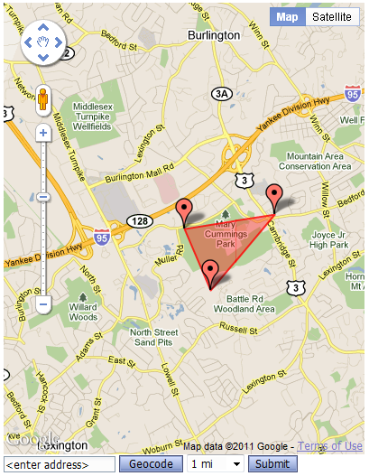
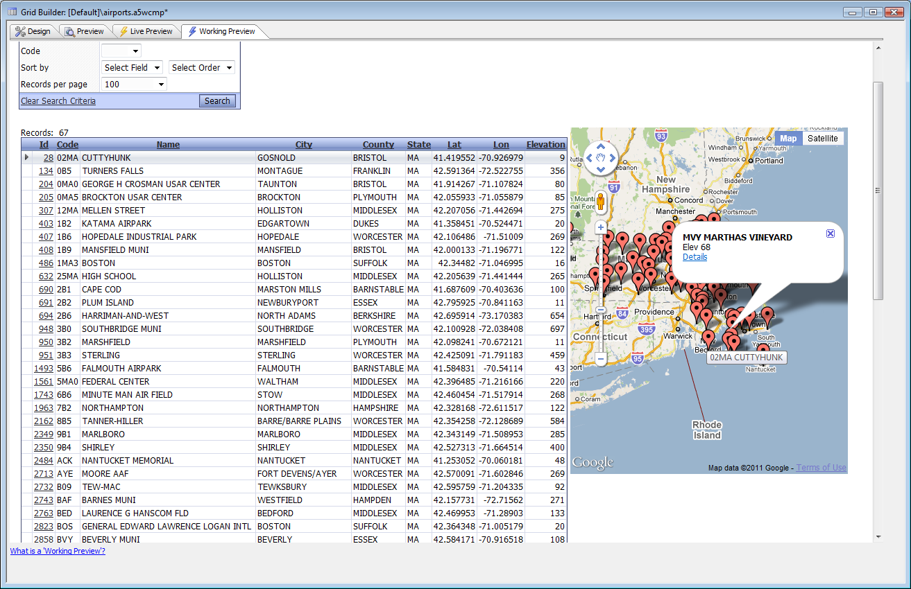
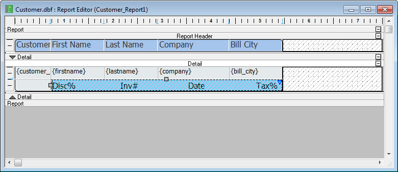
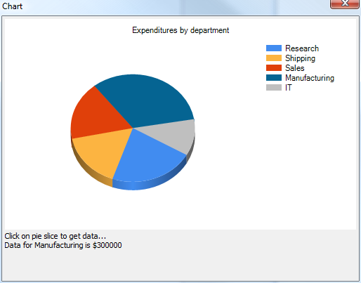
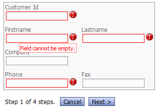
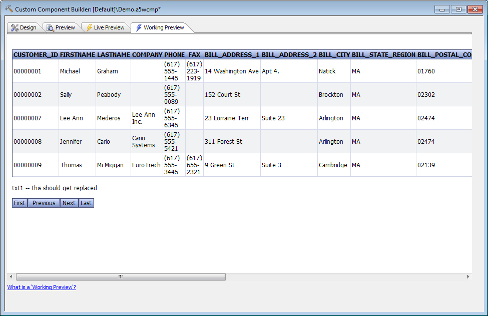
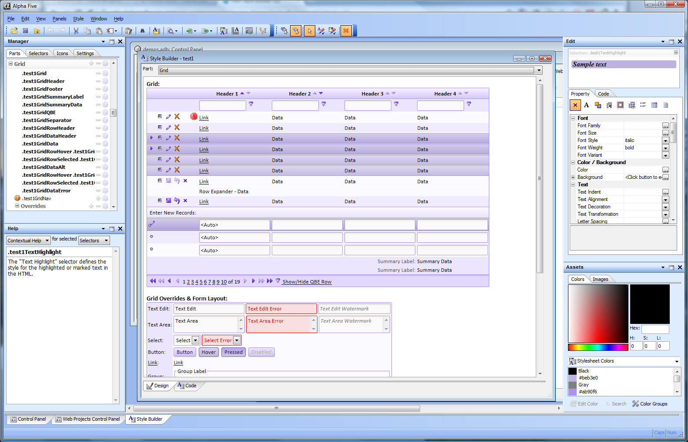

Illustrated Web Overview V11
Programming
Xbasic is now more powerful. Among other improvements, it has support for the .NET Framework
and a more powerful Class syntax
define class global StoredProc dim protected m_Connection as SQL::Connection dim public read protected write SPKeyword as C = "" ...
that supports data hiding.
Performance
The Application Server has been made faster and more robust, and the process of making it compatible with Microsoft IIS at the API level has begun.GIS
We support Geographic databases in a portable waySELECT id, Code, Name, City, County, State, GeogLatitude(Location) AS Lat, GeogLongitude(Location) AS Lon, Elevation FROM US_Airports
and have added a Google Map component.

You can link a Google Map to a row in a Grid, use it as a Geographic Search control for a Grid,

and display the geographic and other information from many rows of a Grid on a Map Alternate View.

All of this works on the desktop as well as the Web.
Reporting
An improved Quick Report Genie...
and a new Layout Table report allow the easy generation of reports in HTML and Excel.

This includes the ability to create Linked Reports, which are even more useful than subreports. Here's a report design with the linked report hatched...

and here's the report preview with the linked sections.

Components
We have integrated Charts and added a Chart API. You can create charts based on .NET Framework charting. You can use integrated charts as a Component, in Reports, and on desktop Forms.
We have a powerful new high-performance Dialog Component that supports repeating sections and optional Genie-assisted data binding.

Multi-page dialogs can be displayed one page at a time with validity checking on a per-page basis.

We have a video player component for HTML 5 and YouTube videos,
an HTML 5 Image Gallery Component,
and a Calendar component.
We have Custom and User-defined Components that allow anyone with HTML, JavaScript, and Xbasic skills to write a component within a pre-defined framework that can easily integrate with Grids, Tabbed UIs, and other Alpha Five Components.

The Lightweight Grid custom component above was created following the simple recipe in Creating a Custom Component V11.
We have a new, vastly improved Style Builder and new, attractive Web component styles that take full advantage of CSS (Cascading Style Sheets) 3. (Click on the image to see it full size in a new window.)

Mobile
Our components now support iPhones, iPads, some Android phones and tablets, and some other mobile hardware with HTML 5/CSS 3 web browsers. As of July 15, 2011, iPhones and iPads are fully tested; only a few Android phones and tablets with Android 2.2 and later have been tested; other devices will be tested later in the development cycle. In the case of the Grid, there is support for multiple named layouts, so that the designer can optimize the Grid's appearance for a PC, a smart phone, and a tablet separately as part of a single Grid definition. There is also support for various mobile device capabilities, such as touch interfaces and geolocation, with iOS devices fully tested and some late-model Android devices tested.Mobile image TK